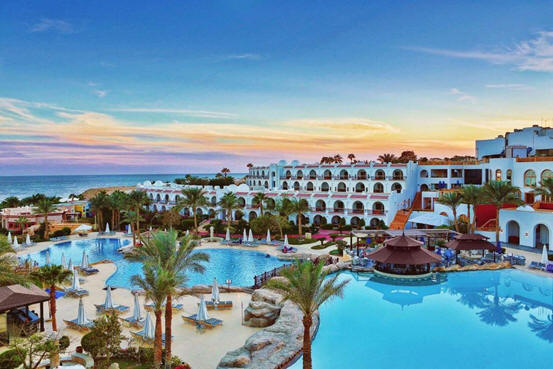

الدرس التالت....
الاهداف
１.
يقرا الدرس قراءه صحيحه
２.
يحدد الفكر الرئيسية والفرعية
３.
يكتب خمسة اسطر عن مدينه السلام
４.
يحكى احداث قصه مصوره
شرم الشیخ مدینة السلام

استيقظ بكار مبكرا قبل أن تشرق الشمس ، وجلس على بساط الریح ، وقال لھا: أیھا
الصدیق العزیز ، أرید أن أزور أرض الفیروز.
بساط الریح : حدثنی یا بكار عن أرض الفیروز
بكار : أرض الفیروز ھي شبه جزیرة سیناء الحبیبة ، ومن
أھم
معالمھا : محمیة رأس محمد ، وحمام فرعون ، وعیون موسى .
وآثار سیناء كثیرة ، منھا : قلعة العریش وجبل موسى ، وبھا دیر سانت كاترین . ثم إن
ھناك یا صدیقي مدینة السلام.
بساط الریح : حدثنی یا بكار عن مدینة السلام.
بكار : قرأت یاصدیقي في "الإنترنت " أن مدینة شرم الشیخ أطلقت علیھا منظمة
|اليونسكو لقب : "مدینة السلام ، "والسبب انها عقدت بھا مؤتمرات واجتماعات كثیرة|
عن السلام العادل بین الدول.
بساط الريح : عرفتھا ، عرفتھا .. إنھا المدینة التي تقع على البحر الأحمر . طار
بساط|
الریح من مدینة القاھرة ، متجھا إلى مدینة شرم الشیخ ، وكان سعیدا بمیاه البحر
|الأحمر الصافیة والشعب المرجانیة الجمیلة.
بكار : حقا ، إن شرم الشیخ شواطئها رائعة ، وهذه محميات طبيعة تضم حیوانات |وطيورا
ونباتات متنوعة الأشكال والألوان.
ھبط بساط الریح على أرض شرم الشیخ ، فوجد السائحین في كل مكان .. إنھم یتوافدون
|للتمتع بالریاضات المائیة من غوص وتزلج إلى جانب سیاحة السفارى" في المناطق
|الجبلیة الفسیحة.
بساط الريح
:
انظر یا بكار ، ما أجمل ھذه القرى السیاحیة ، وتلك الفنادق والمقاھي |والمطاعم!
حقا ، ما أعظم سیناء ! وما أجمل مدینة السلام ! وأھلا ومرحبا بالسلام
الدرس
الرابع: نص: اسلمي یامصر